1 · p7.3.n — how little does the prompt need to say?
HD_p023 return its input), garment preservation (the entire purpose),
and extent (a whole-body instruction against a waist-up photograph is satisfied by
inventing legs). Everything else in p7.3 is a candidate for deletion until it
earns its place.p7.3 contains four negations and names four nouns it does not want rendered
— bag, face, skin, hair. Every first-party source says to write positives
instead, and Qwen's own prompt rewriter forbids negation words outright. .3
replaces "no face, no skin, no hair" with "smooth and featureless";
.5 is the whole of p7.3 with every negation turned positive;
.6 is the untouched control.p7.3.1 is adopted — roughly 20 words carrying only the three
irreducibles. Two modifier variants sit beside it in blue: p7.3.1acc adds
“entire outfit including accessories” and was judged worse;
p7.3.1exact replaces that with the single word “exact”
— one word instead of four, and a fidelity instruction rather than an inventory
one.This person's outfit on a dark beige skin mannequin, shown from the head to the chest, on a plain white background.
This person's entire outfit including accessories on a dark beige skin mannequin, shown from the head to the chest, on a plain white background.
This person's exact outfit on a dark beige skin mannequin, shown from the head to the chest, on a plain white background.
This person's outfit on a dark beige skin mannequin, shown from the head to the chest, on a plain white background. Each garment keeps its own colour, print, texture and cut.
This person's outfit on a dark beige skin mannequin, shown from the head to the chest, on a plain white background. Each garment keeps its own colour, print, texture and cut. The mannequin is smooth and featureless.
This person's outfit on a dark beige skin mannequin, shown from the head to the chest, on a plain white background. Each garment keeps its own colour, print, texture and cut. The mannequin is smooth and featureless. The mannequin wears every garment the person wears, drawn as they wear it.
This person's outfit on a dark beige skin mannequin, shown from the head to the chest, on a plain white background. The mannequin is smooth and featureless, and wears every garment the person wears, drawn as they wear it, keeping its shape and drape. Each garment keeps its own colour, print, texture and cut. The mannequin wears exactly the garments in the photograph.
Show this person's outfit on a dark beige skin mannequin against pure white. The mannequin wears every piece the person is actually wearing, exactly as they wear it, keeping its shape and drape - and the person themself is gone, no face, no skin, no hair. Copy each piece exactly - the same colour, print, texture and cut. The mannequin wears only what the person is wearing and nothing else: if they are not carrying a bag, there is no bag. Show the mannequin from the head to the chest only, cut off below the chest.
The prompts above are shown for p029; the colour word and the extent phrase are read per reference, so those two spans differ row to row. Everything else is identical down each column.
p029colour dark beige skin · framing chest_up
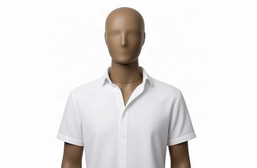
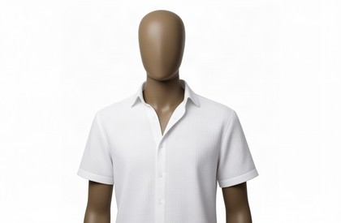
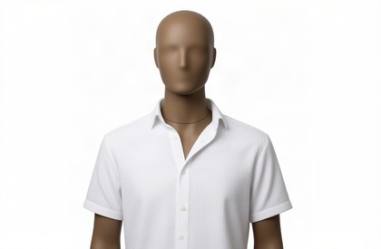
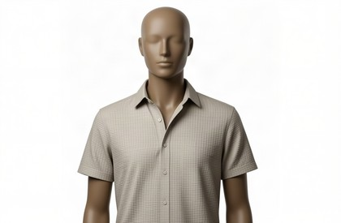
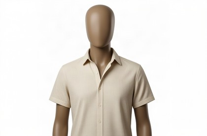
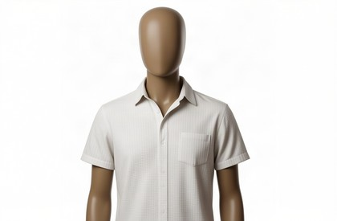
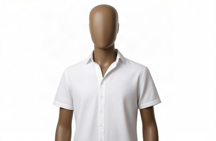
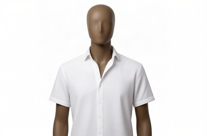
p030colour light brown skin · framing chest_up
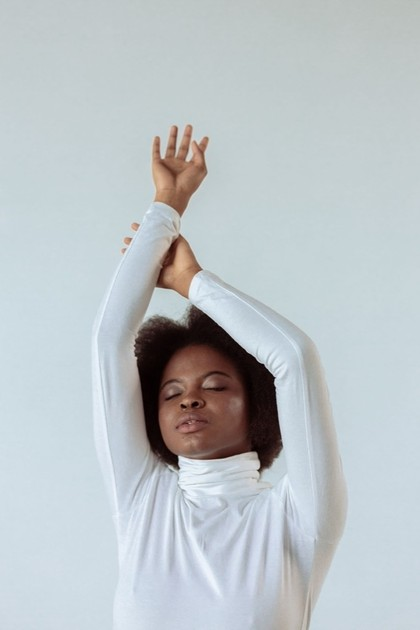
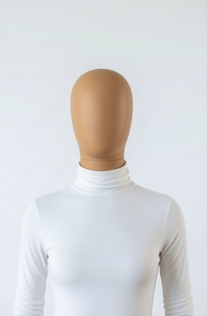
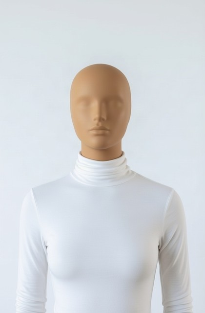
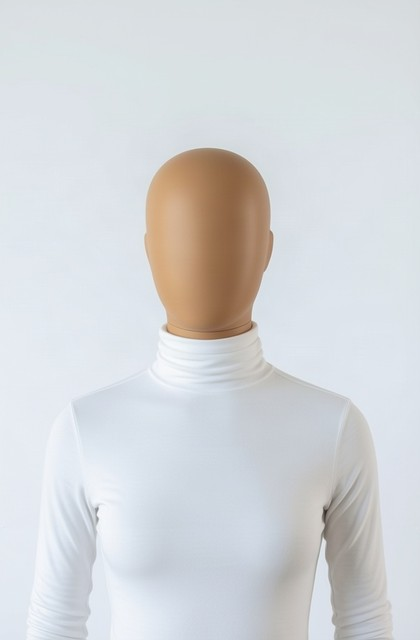
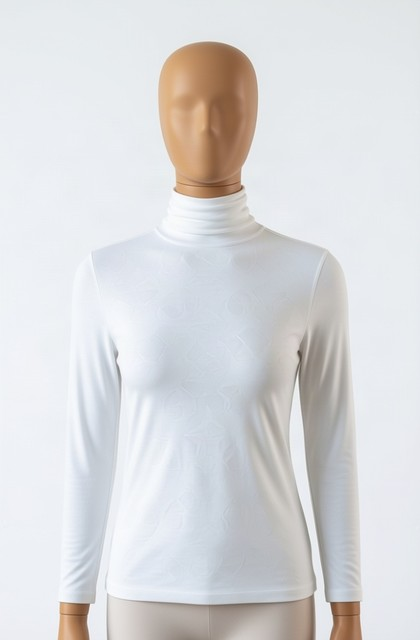
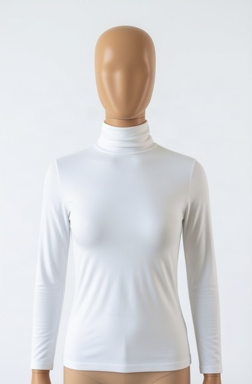
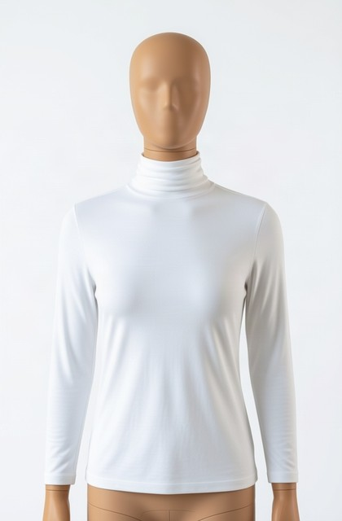
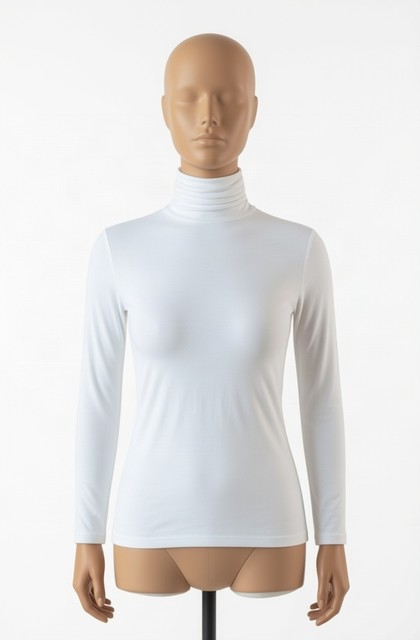
dualuse_emma_watson_black_blazer_armscrossedcolour dark beige skin · framing waist_up
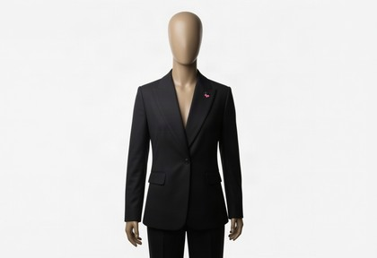
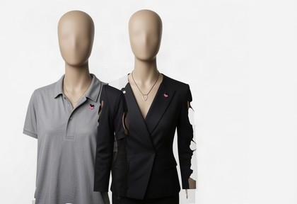
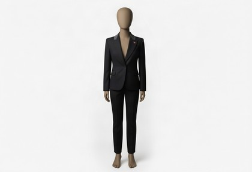
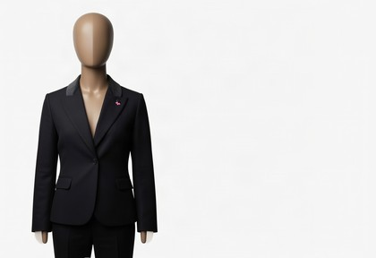
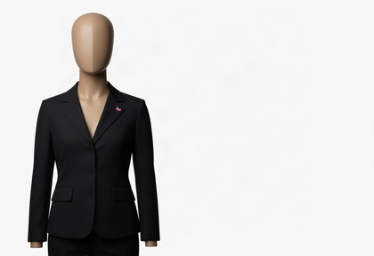
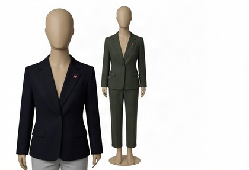
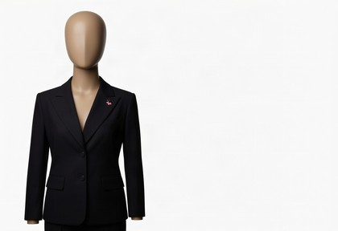
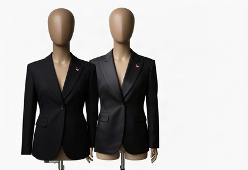
g013colour light brown skin · framing full_body
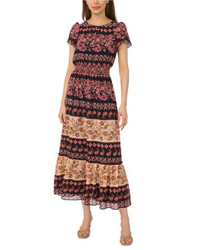
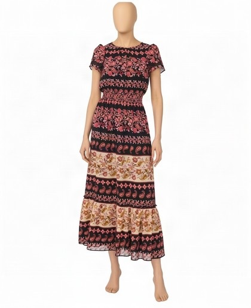
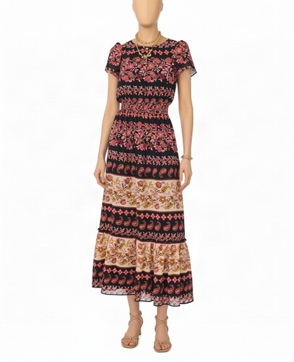
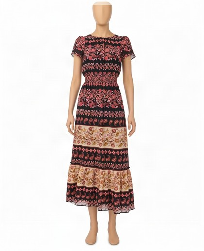
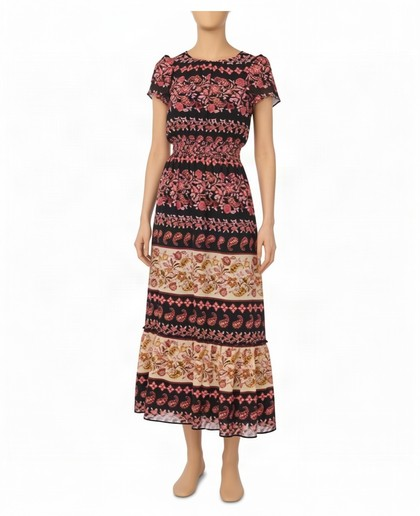
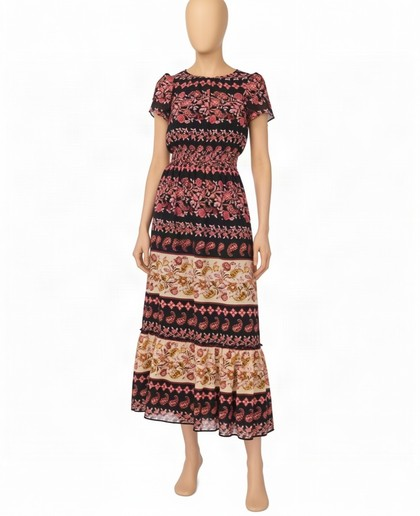
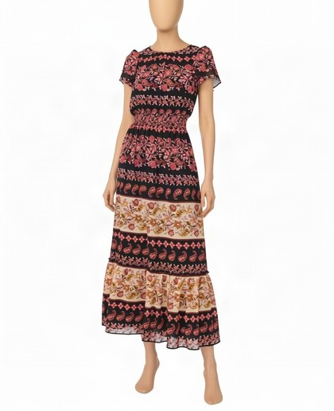
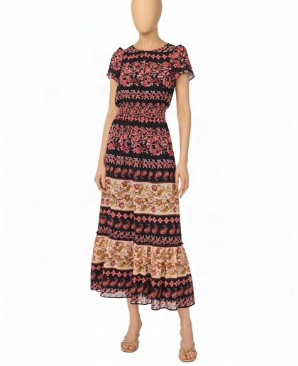
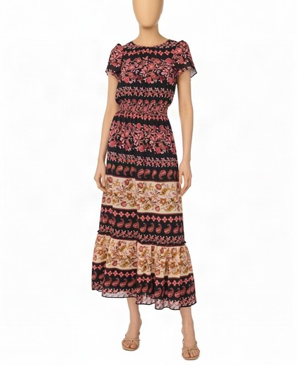
g015colour dark beige skin · framing full_body
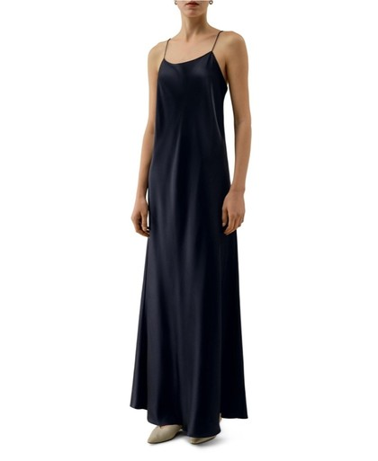
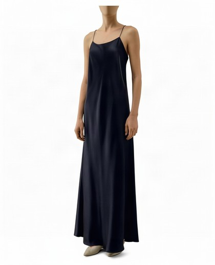
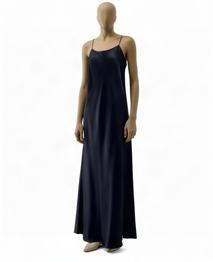
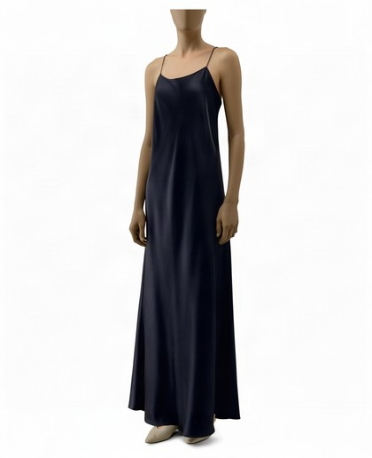
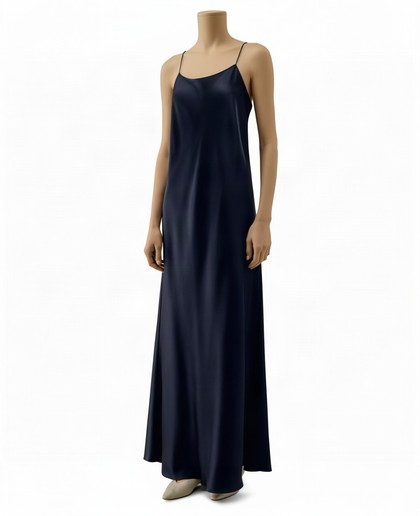
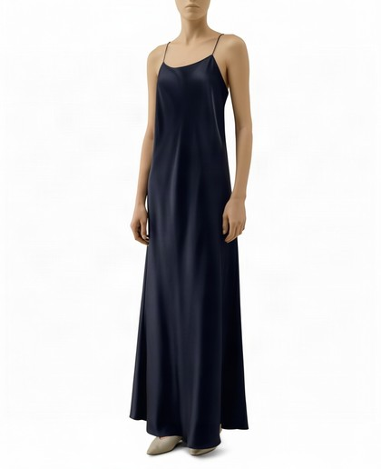
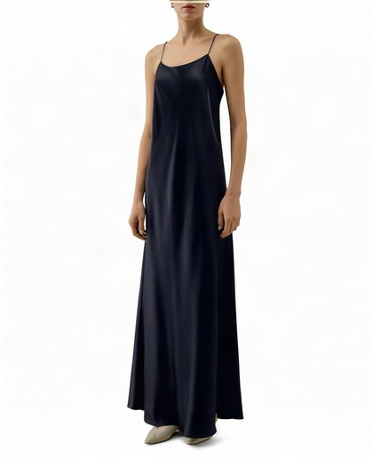
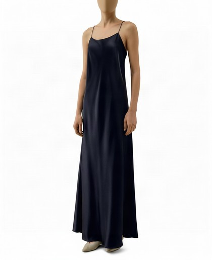
g029colour black skin · framing waist_up
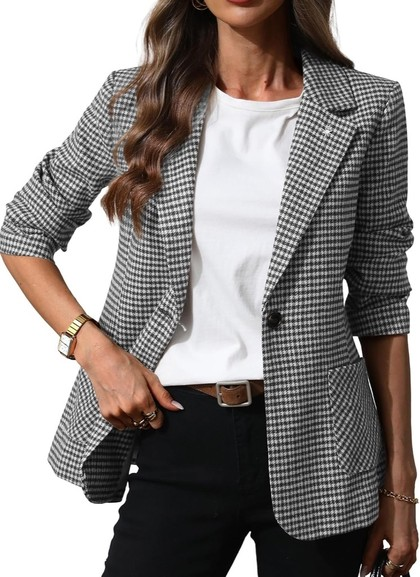
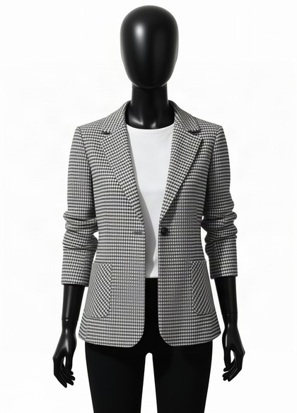
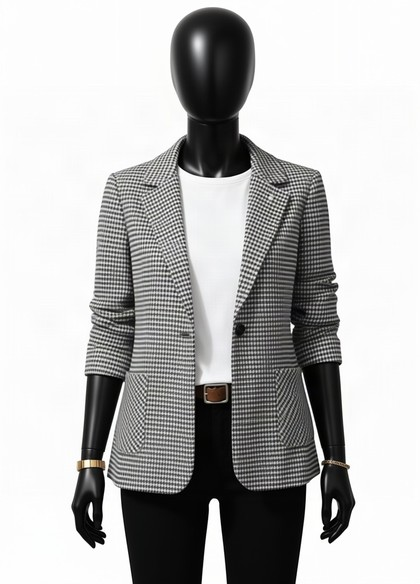
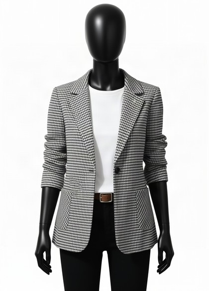
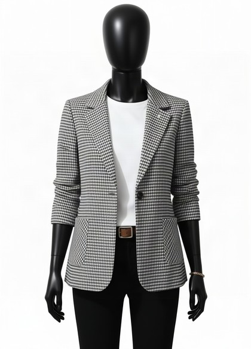
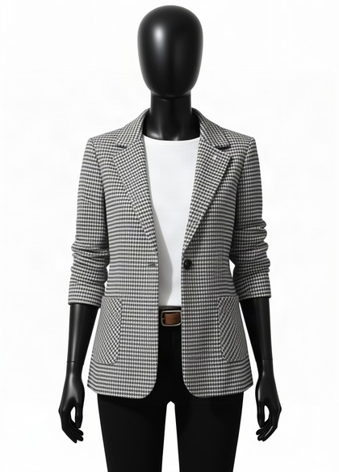
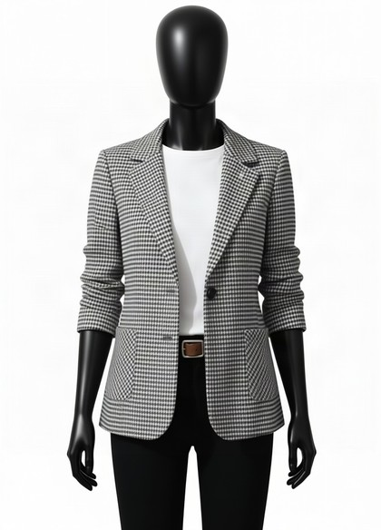
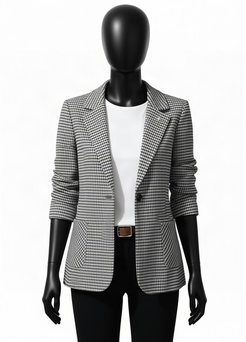
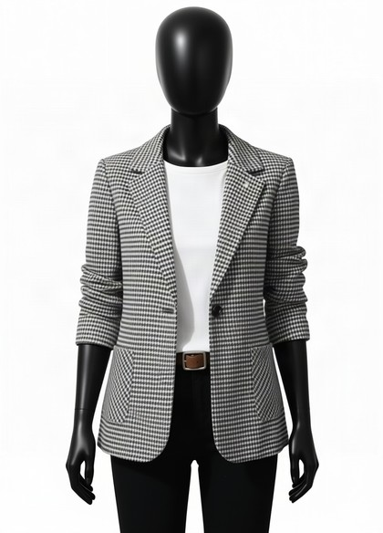
dualuse_man_black_suit_studio_noncelebcolour black skin · framing full_body
g024colour dark beige skin · framing full_body
2 · Cropping the input before extraction
CROPH is
the interesting one and it is not free — cutting the head reintroduces exactly the
cut boundary that v3.0 showed klein copies into its output. The hypothesis is that
a regenerative consumer may not copy a boundary the way a subtractive one does.
The mask stack and the regeneration arm have never been used together, so this has never
been tested. The prompt is held fixed at p7.3: the input is the only
variable.p029prompt held at p7.3 — only the input changes
p030prompt held at p7.3 — only the input changes
dualuse_emma_watson_black_blazer_armscrossedprompt held at p7.3 — only the input changes
g013prompt held at p7.3 — only the input changes
g015prompt held at p7.3 — only the input changes
g029prompt held at p7.3 — only the input changes
dualuse_man_black_suit_studio_noncelebprompt held at p7.3 — only the input changes
g024prompt held at p7.3 — only the input changes
3 · The high-hair-damage cohort
p7.3.1, the adopted
minimum; the input is the only variable.CROPH is the direct question. On a subtractive
consumer, cutting the head is what produces the jagged boundary v3.0 showed klein copies
into its output — it is the origin of the whole problem. On a regenerative
consumer it may simply remove the hair without that cost, because the model is not bound
to reproduce what it was shown. If CROPH is clean here, the CPU mask stack
and the regeneration arm solve each other's problem, and they have never been run
together.p021V2 hair over garment 19.5% · colour dark beige skin from p001
p023V2 hair over garment 16.9% · colour light brown skin from p002

dualuse_zendaya_white_blazer_skirtV2 hair over garment 14.4% · colour dark beige skin from p004

p019V2 hair over garment 13.5% · colour dark beige skin from p005

p028V2 hair over garment 11.9% · colour light brown skin from p007

p009V2 hair over garment 7.2% · colour dark beige skin from p008